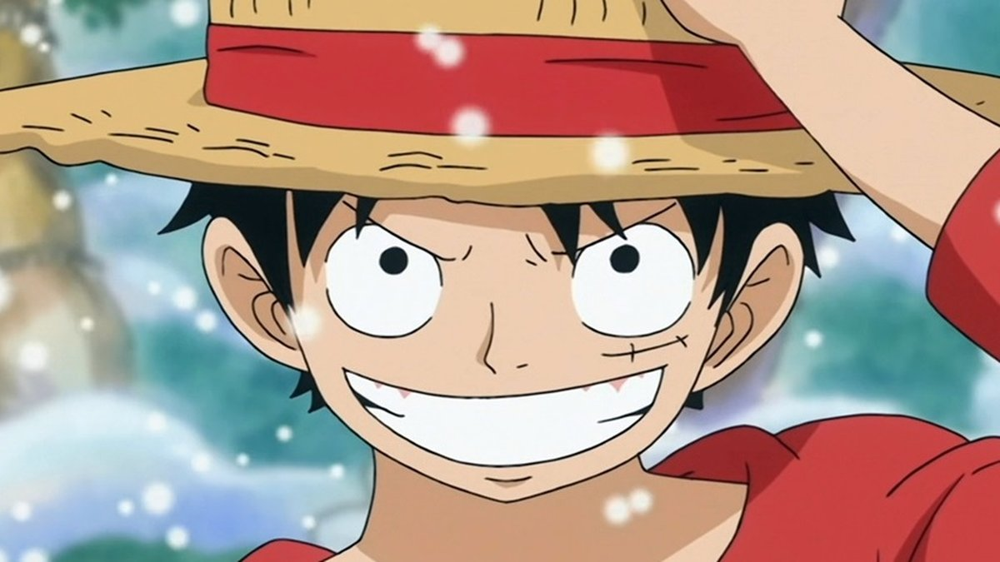

| Monkey D. Luffy |
|---|
 |
| Primeira Aparição: | Capítulo 1 e Episódio 1 |
| Organização: | Piratas |
| Ocupações: | Pirata, Capitão, Prisioneiro (antes) e Bandido (antes) |
| Local de Nascimento: | East Blue |
| Idade: | 19 |
| Estado: | Vivo |
| Recompensa: | 1.500.000.000 berries |
| Akuma no Mi: | Gomu Gomu no Mi |
| Tipo: | Paramecia |
| Hablidade: | Borracha |
Monkey D. Luffy
Monkey D. Luffy, também conhecido como Luffy Chapéu de Palha ou Chapéu de Palha,é um pirata e o protagonista do anime e mangá One Piece. Ele é o fundador e o capitão do cada vez mais infame e poderoso Piratas do Chapéu de Palha, bem como um de seus quatro principais lutadores. Seu sonho de vida é se tornar o Rei dos Piratas, encontrando o lendário tesouro deixado pelo falecido Rei dos Piratas, Gol D. Roger. Ele acredita que ser o Rei dos Piratas significa ter a maior liberdade do mundo. Após sua invasão em Totto Land e suas ações contra a Yonkou Big Mom, ele é atualmente considerado pela imprensa global como o Quinto Imperador.
Ele é o filho do líder Revolucionário Monkey D. Dragon, neto paterno do herói da Marinha Monkey D. Garp, irmão jurado do falecido "Punhos de Fogo" Portgas D. Ace e do chefe de gabinete Revolucionário Sabo, e o filho adotivo de Curly Dadan.
Luffy tem uma reputação mundial por causar problemas, desafiando os Shichibukai, a Marinha, e os Yonkou, e cometendo adicionalmente crimes e ações que foram consideradas ameaçadoras pelo Governo Mundial. Além disso, na maioria destes confrontos, ele emergiu como o vencedor. Ele ganhou a reputação de ser "imprudente" e, em alguns casos, "insano", depois de causar um incidente em Enies Lobby, agredir um Nobre Mundial no Arquipélago de Sabaody, entrar e escapar de Impel Down (causando indiretamente um tumulto em grande escala),e ingressar na Batalha de Marineford. Ele é, portanto, famoso por ser o único pirata conhecido por atacar deliberadamente não só às três instalações governamentais mais importantes, mas também por escapar vivo de todas elas. O fato adicional de que ele socou um Nobre Mundial com pleno conhecimento das consequências, bem como a sua herança, fez com que Luffy fosse rotulado como um "Futuro Elemento Perigoso", ganhando a ira do Almirante da Frota Akainu e do Quartel General da Marinha.
No início do Arco Levely, as realizações de Luffy foram compiladas, inflando muito sua infâmia, que já era imensa no começo. Isso inclui seu relacionamento como um irmão jurado do falecido comandante da segunda divisão dos Piratas do Barba Branca e filho de Gol D. Roger, Portgas D. Ace, e do chefe de gabinete do Exército Revolucionário, Sabo; a frota que não oficialmente se formou sob ele; a operação de infiltração no território da Big Mom, Totto Land, onde ele derrotou os Comandantes Doces Charlotte Cracker e Charlotte Katakuri, tentou o assassinato da própria Charlotte Linlin, destruiu seu castelo (não intencionalmente) e criou uma aliança com a Germa 66, os Piratas do Sol e os Piratas Fire Tank, antes de escapar depois que o assassinato falhou. Embora suas capacidades tenham sido um pouco exageradas pela imprensa, suas realizações foram grandes o suficiente para ele ser oficialmente intitulado o "Quinto Imperador do Mar".
Aparência
Luffy é conhecido como "Luffy Chapéu de Palha" por sua marca registrada que é o Chapéu de Palha, que ele ganhou emprestado ainda jovem pelo lendário Yonkou, Shanks "O Ruivo", que, por sua vez o recebeu de Gol D. Roger. Luffy veste um short azul, sandálias e um colete vermelho com mangas. Luffy também tem uma cicatriz com dois pontos embaixo do olho esquerdo (que ele ganhou por se esfaquear usando uma faca em seu olho para mostrar para Shanks que ele era um homem) e cabelo preto curto e bagunçado. Ele foi gravemente ferido por Akainu na Batalha de Marineford, deixando uma grande cicatriz em forma de "X" em seu peito. Parecendo ser magro debaixo de sua camisa, ele tem um físico surpreendentemente bem construído. Ele é aparentemente muito baixo, pois sua altura é ofuscada pela maioria dos indivíduos na série.
Antes do Timeskip

Semelhante a maioria de seus colegas de tripulação do sexo masculino, Luffy tem a mesma roupa durante a maior parte da série, ao contrário do resto da tripulação (especialmente Nami e Nico Robin), que trocam de roupa com freqüência. Luffy pode vestir uma roupa diferente para se adequar ao clima de uma ilha (como uma parka com capuz na Ilha de Drum ou roupões do deserto em Alabasta), mas vai voltar a usar a sua marca registrada colete e short. Apesar disso, ele vai vestir seu traje habitual em cores diferentes e tem sido conhecido por usar diversos outros itens ao longo do tempo.
- Durante o Arco Ilha de Drum, ele usava duas parcas, sendo a primeira uma parca vermelho-escuro com pele nos punhos, capuz, e em, e, em seguida, um xadrez, casaco com capuz com as cores branca, laranja e amarelo brilhante, que Nami usava no início.
- Durante o Arco Alabasta, ele usava vestes típicas do deserto constituídos por um manto vermelho-escuro com três anéis brancos decorados ao longo de ambas as mangas e um envoltório de luz azul sobre sua cabeça.
- Durante o Arco Skypiea, ele usava uma pulseira preta em torno de seu pulso esquerdo com uma pulseira branca sobre ela.
- Durante o Arco Davy Back Fight, Luffy usava um afro na cabeça, shorts vermelhos escuros, e ataduras vermelhas em seus pés, obtendo uma imagem de um crânio flamejante azul e ossos cruzados pintados sobre o peito, bem como, quando ele estava lutando contra Foxy.
- Durante o Arco Enies Lobby, ele usava shorts pretos que tinham bolsos mais do que seus shorts azuis (No entanto, Luffy notou que não seria possível colocar a carne neles).
- Durante o Arco Pós-Enies Lobby, Luffy usava uma camiseta branca com o emblema da Companhia Galley-La em vermelho; forros vermelhos ao redor do topo, ombros e colar; e shorts azuis da Marinha.
- Durante o Arco Thriller Bark, ele usava um colete laranja e shorts vermelhos. Depois da batalha contra Moria em Thriller Bark, Luffy usava um escuro decorado, braçadeira de joias em torno de seu bíceps esquerdo, dado a ele por Nami. Esta braçadeira foi mais tarde revelada ser um mapa que leva ao tesouro perdido do capitão John, que Buggy procurava por algum tempo. levando Luffy a entregar a braçadeira para Buggy em troca de seus serviços em ajudá-lo a procurar por Ace em Impel Down.
- Durante o Arco Arquipélago de Sabaody, no mangá ele usava um colete azul e shorts vermelhos (que pode ser visto na capa do volume 52). No anime, ele usava o mesmo colete azul, mas com shorts azul-escuro.
- Durante o Arco Amazon Lily, Luffy usava um colete azul-claro com shorts vermelhos.
- Durante o Arco Impel Down, Luffy usava seu traje de sua estadia na Amazon Lily até depois de sua luta com Magellan, em que ponto ele substituiu seu colete azul com um colete amarelo brilhante dado a ele por Inazuma.
Não importa onde ele for, Luffy sempre usa seu chapéu de palha, embora, no início, o chapéu era propenso a cair de sua cabeça facilmente, forçando Luffy, a dar o seu chapéu para alguém o segurar toda vez que fosse lutar. A partir do Arco Alabasta em diante, ele conseguiu uma corda para ele, que foi costurada por Nami, permitindo que o chapéu fosse pendurado em seu pescoço durante as lutas.
Durante seu regresso a Marineford para dar uma oração silenciosa, Luffy foi brevemente mostrado com quatro caracteres escritos à sua direita com a ortografia no braço "3D 2Y", com o 3D cruzado para fora para simbolizar que os Chapéus de Palha deveriam encontrar-se em 2 anos (2Y), ao invés dos 3 dias (3D), como previsto depois de fugir de Bartholomew Kuma.
Depois do Timeskip

Após esses dois anos, algumas coisas mudaram. Luffy usa, um cardigan vermelho de mangas compridas aberto com quatro botões (que exibe a cicatriz de "X" que cobre a maior parte de seu peito, que ele recebeu pelo então Almirante Akainu), com uma faixa amarela amarrada na cintura, algo reminiscente da roupa de Gol D. Roger. Ele ficou um pouco mais alto, e é mostrado que ele está significativamente mais musculoso, devido ao seu treinamento. Isto pode ser visto em seu pescoço um pouco mais grosso, deltoides mais pronunciados, e um peito mais definido.
- Durante o Arco Punk Hazard, Luffy usava um casaco de inverno longo com tiras horizontais vermelhas e brancas, juntamente com tapa-orelhas amarelas, que ele roubou de um dos centauros de Barba Marrom.
- Durante o Arco Dressrosa, Luffy usava uma camisa aberta, de manga curta com um padrão de girassóis, junto com seus shorts azuis padrão e a faixa amarela em volta da cintura. Ele também usava uma barba falsa. Ao entrar no torneio para conseguir a Mera Mera no Mi no Coliseu Corrida ele usava uma armadura estilo viking completo, com uma espada e escudo, até que foi retirado dele devido à violação da restrição de peso. Após a revisão da restrição de peso, ele acrescentou uma capa e usava o mesmo capacete estilo viking que ele usava anteriormente. Junto com seu número de inscrição '0556' na parte de trás de sua camisa, obscurecida por sua capa. Quando se recuperou depois de sua batalha contra Doflamingo, Luffy usava uma blusa de cor escura, juntamente com seus shorts padrão.
- Durante o Arco Ilha Whole Cake, Luffy usava um cardigã branco aberto e elegante com mangas bufantes, junto com seu short padrão em vermelho. Ele também tinha um lenço decorativo enrolado em seu chapéu de palha depois de aterrissar no Bosque Sedutor, embora ele parecesse tê-lo perdido durante sua batalha com Charlotte Cracker. Essas roupas acabaram sendo despedaçadas depois de várias batalhas e ele mais tarde vestiu uma nova roupa para se encontrar com Capone Bege: um paletó vermelho com uma camisa marrom e um lenço vermelho junto com shorts vermelhos formais. Ele também colocou um chapéu preto no topo do chapéu de palha.
- Durante o Arco País de Wano, Luffy usou um yukata vermelho com uma colcha de retalhos de um sol azul arredondado sobre um fundo ciano e um obi amarelo. Ele também tinha um topete em cima de seu cabelo. Ele também tem a Nidai Kitetsu que ele pegou emprestado do Tenguyama Hitetsu.